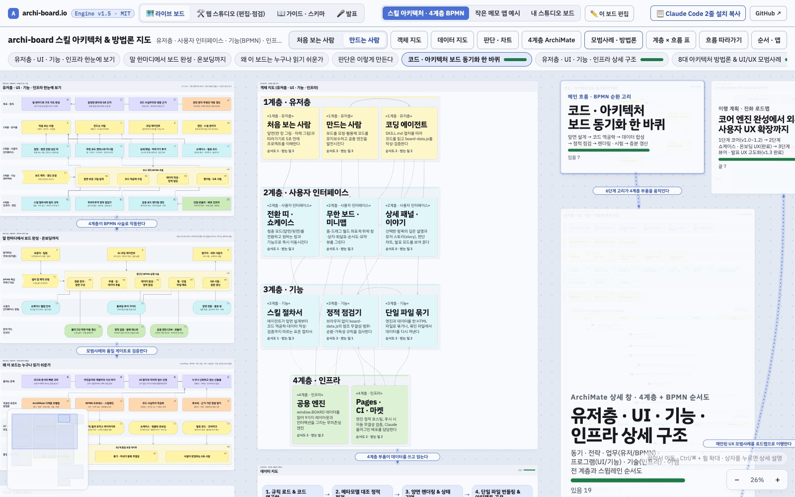
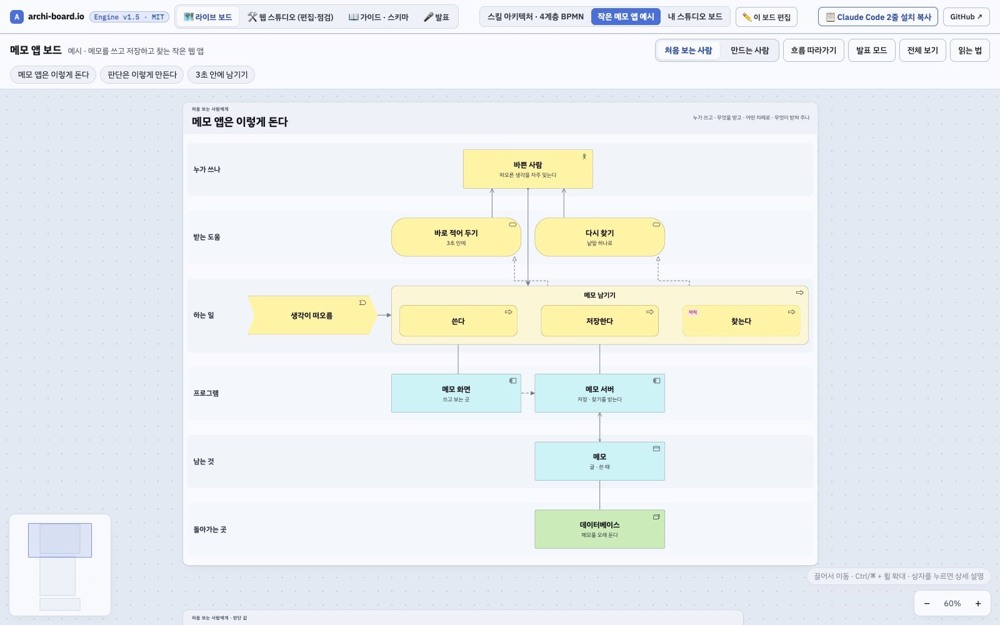
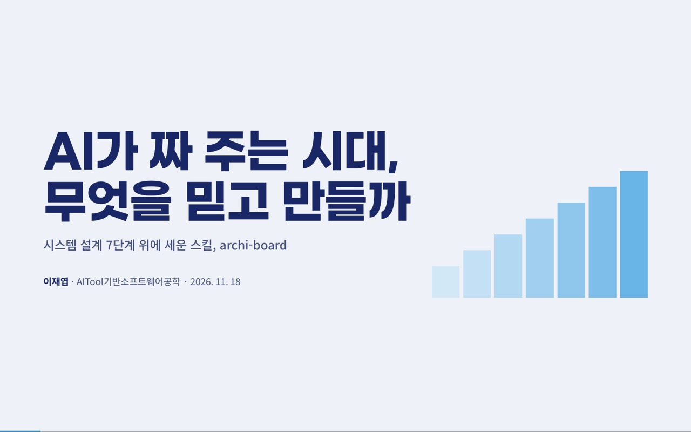

- 무엇
- 프로젝트를 읽어 그리는 무한 보드 한 장
- 언제
- 2026.10 – 11
- 내 몫
- 혼자. 엔진 · 스킬 · 예시 보드
- 결과물
- 공개 스킬 (MIT) · 예시 보드 · 엔진 1.6
- 상태
- 공개함
만든 것
- 1
- 장 프로젝트 하나에 보드 한 장
- 2
- 면 처음 보는 사람 · 만드는 사람
- 4
- 층 사용자 · 화면 · 기능 · 인프라
- 1.6
- 엔진 버전 보드 데이터와 따로 올라감



근거
누구나 열어 볼 수 있는 주소만 놓았습니다.
예시 보드gamercross.github.io/archi-board
저장소github.com/gamercross/archi-board · MIT
수업 발표 덱AI 시대, 무엇을 믿고 만들까
archi-board2026.10 – 11 · 공개함
함께
혼자 만들었고, 누구나 쓸 수 있게 MIT 라이선스로 공개했습니다.
다음 작품
DOTCI
캠퍼스 장소에 도착하면 선배의 쪽지가 열리는 신입생용 웹